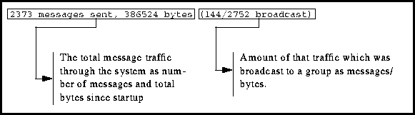
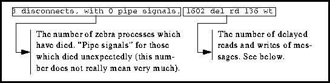
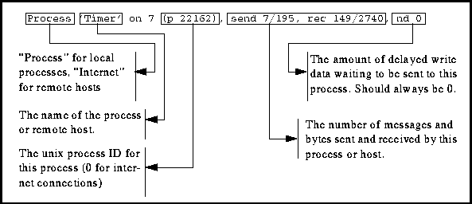

Table of Contents
Table of Contents
 Previous Chapter
Previous Chapter
Table of Contents
Previous Chapter
Zebra is structured as a group of cooperating processes tied together through a message-based interprocess communication mechanism. Individual processes are designed to take on small (usually), well-defined tasks within the zebra system. To a great extent, new capabilities can be added through the addition of new processes.
Zebra's processes can be grouped into a set of broad functions. At the heart of the system are the core processes, which provide the basic support to keep the system running. The module known as the data store is charged with bringing in diverse data streams, unifying them into a single database, and providing access to other processes. The display processes provide graphics to the user. Ingest processes obtain data from various sources, reformat it, and insert it into the data store. Analysis modules perform some sort of computation on available data, storing the result as new data.
Within every running zebra system will be found a set of core processes --- those which must be present for zebra to run properly. In brief (detailed descriptions come later), these processes include:
The above processes are sufficient to allow a basic zebra system to run. However, a zebra with only the above processes will not do much interesting work. Most zebra systems run a set of display software in order to produce graphics. The display-oriented processes include:
More programs are needed to bring data into the zebra system and to move it around in a real time environment. There are numerous ingest processes, only some of which will be listed here. Most sites work with a dataset which has already been ingested through zebra, such as during a field project, into data file formats which all zebra processes can read. Ingest processes are used in real-time during field projects and for collecting external data into zebra datasets after the project.
The zebra system is intended to incorporate a range of analysis modules, which retrieve data from the data store, perform some sort of analysis process on it, and insert the result as a new data product for the rest of the system. Such modules could include dual-doppler analysis, models, quality control modules, and so on. The current zebra system as used by NCAR does not include any of these modules. See the Data Management Guide for more details on analysis and ingest modules and on incorporating new data into zebra.
Finally, zebra has a range of monitoring and control tools to allow a user to see the status of the zebra system itself. These tools include:
The LastData and zmon tools are used almost exclusively in real-time environments; therefore, they are described in detail in the Guide to Real-time Zebra.
The core of the zebra message system is the message daemon. This process handles the interprocess communication needs of the entire system; there is at least one message process on every machine running zebra. Every other process opens a connection to the message daemon (currently through a unix domain socket) which is used for all message traffic.
The message system provides a view of the world where every known process is reachable by name. To make a timer request, a process need only format up the proper message and request that it be sent to the process called "timer." The delivery details are handled by the message daemon. Delivery to processes on remote hosts may be requested by adding a qualifier of the form "@host" to the name of the recipient process. The message daemons communicate among themselves via a TCP connection for the delivery of inter-host messages.
Zebra processes may associate themselves with one or more broadcast groups. A message may be sent to all members of a group simply by addressing it to the name of that group. For example, processes may join the "client events" group and receive notifications whenever a process enters or leaves the zebra system. Exit notifications are often used to know when to clean up client-specific data structures.
On systems that support it, the message system is implemented using non-blocking I/O operations. The use of non-blocking I/O adds reliability in that no process can hang up the entire message system.
The message system must be the first zebra process to run. It may be started with the simple command:
message [-i]
Message will move itself into the background automatically when it has finished its setup process. If the -i option is present, message will open an internet socket, thus making it accessible from other nodes on the net. This capability is used mostly in real-time situations, but other applications exist.
When the -i option is used, you may occasionally see a situation in which the startup of message is delayed and a "waiting for IN socket to clear" message appears. This comes about as a result of how some unix TCP/IP systems are implemented. In most cases, the problem will clear in about one minute or so once the system has timed out one of its mysterious internal counters. Occasionally, however, some other process will have grabbed the zebra message port and things will never time out. Your recourse in that case is to either get rid of the offending process, or switch message to another port.
The message system looks in the /etc/services file for a port named "zeb-msg." If it is not found, then the message daemon uses the default port (currently 1500) and prints a message like "zeb-msg service not found; using default port." The message can be safely ignored.
To shut down the message system (and, with it, the rest of zebra), simply type zstop and everything will go away.
Each running message manager establishes a local UNIX socket and namespace through which other zebra processes can communicate and exchange messages with each other. The message manager also serves as a gateway to the namespaces of remote message managers running on other machines, or hosts. The message manager, its local socket, its Internet port number, and its namespace all together comprise a message manager session, and each session is known by a session name. Usually the name of a session is simply the name of the host on which the session is running. In this way messages addressed to process@session automatically name the host to which they should be sent. However, sessions can also be given more descrptive names independent of the host running the session, and multiple sessions can run on a single host.
A message manager obtains the file path of its UNIX socket from the environment variable ZEB_SOCKET, if it exists; otherwise the message manager uses a default path. Two sessions can share a host if each are given a unique UNIX socket path. Ordinarily the two sessions will not be able to exchange messages because neither will have an Internet port number and socket.
One message manager session cannot reach another unless it knows the Internet address and port number of the other session. Usually, the Internet address can be found by looking up the host name in a process@host address, while the port number defaults to the zeb-msg services entry or the compile-time default. Sessions whose names are not the host name or whose ports are not the default port can be listed in an address or session map. The message manager looks up session names in its address map to find the host and port number to which it should attempt a connection to reach that session. For example, suppose an address map file named `Sessions' contains the entries below:
datastore disks.domain.edu 3344 display1 myhost 3345 display2 myhost 3346
Each entry contains the session name, host address, and lastly the port number. In this example, the data store daemon for a particular project runs on a machine called `disks'. Presumably its disks are NFS-mounted by other machines on the network. The data store daemon session might be started with this command on the machine `disks':
message -i -f sessions -s datastore
The -i option tells the daemon to listen for Internet connections on the port number given in the map file for the `datastore' session, 3344. Likewise, a display session on the machine `myhost' would begin with this command:
message -f sessions -s display1
The clients of the `display1' session would run with the environment variable DS_DAEMON_HOST set to `datastore', so that all datastore messages from `display1' clients would be addressed to the data store process at `datastore'. [See Section 3.15 on page 65.] The `display1' message manager looks up the datastore session name in the map file to discover the address and port number of that session and thereby establish a connection.
Note that the `display1' manager does not need to listen for connections on its Internet socket, since it is not expecting to be queried by any other clients or sessions. Instead, the `display1' session manager actively queries the the `datastore' session, which is listening for connections.
A second display on the machine `myhost', using the same datastore as `display1', can run in a separate session called `display2'. This second session requires a unique ZEB_SOCKET environment setting so that its UNIX socket path does not collide with the `display1' socket. Likewise, the `display2' session gets a unique port number from the map file, different from the `display1' port:
setenv ZEB_SOCKET /tmp/display2.socket setenv DS_DAEMON_HOST datastore message -f sessions -s display2
Using an address map file allows the location of zebra sessions and services to be specified and managed in a single place and easily changed. For example, the machine hosting the data store session can be changed by changing the address and port of the `datastore' session in the `sessions' file. Also, map files allow simpler management of connections between sessions on a single machine, since the map file contains the unique port number of each session on the machine.
The list below summarizes the complete set of message daemon options:
All of the hyphenated options can be abbreviated to one or more letters. For example, internet often appears only as i.
The "mstatus" command will produce a display showing the overall status of the message system. The output of mstatus includes the status of the daemon itself, some statistics, followed by several lines each reporting on a connection to a message manager client:
'Message manager'@narnia: pid 22293, uid 2458 (granger)
unix socket: /tmp/fcc.socket; internet socket not enabled
session began: Mon Nov 13 12:57:12 1995
2118 messages sent, 573628 bytes (24/1728 broadcast)
5 disconnects, with 0 pipe signals, 1355 del rd 0 wt
Process 'Event logger' on 5 (p 22294), send 13/152, rec 68/3543, nd 0
Process 'Timer' on 6 (p 22296), send 11/243, rec 31/1520, nd 0
Process 'DS_Daemon' on 7 (p 22297), send 1173/558232, rec 792/8136, nd 0
Process 'Displaymgr' on 8 (p 22300), send 38/1595, rec 22/1164, nd 0
Process 'Status reporter' on 9 (p 22310), send 3/48, rec 12/647, nd 0
Internet 'ale' on 15 (p 0), send 2/24, rec 2/36, nd 0
The first three lines provide some static information determined when the message manager began. The first line gives the manager's process and session names in the form `Message manager'@session. The process name is always `Message manager', and the session name is usually the host name (in this case `narnia'). The session name is followed by the process ID of the message daemon and the user ID of the user who started the session. For convenience, the end of the first line includes the name of that user in parentheses.
The next line reports socket information: the path name of the UNIX socket and the port number of the Internet socket. If the Internet socket was not enabled with the -i option, then mstatus reports `internet socket not enabled.' Finally, the third line of static information reports the time this session began.
The fourth line has the following form:
 Amount of that traffic which was broadcast to a group as messages/ bytes.
The following line carries some event statistics as seen by the message manager process. The various fields mean:
 The number of delayed reads and writes of messages. See below.
The numbers for delayed reads and writes are only relevant on systems where non-blocking I/O is being used. In that case, the numbers indicate the number of read calls for which the data had not yet arrived, and the number of write calls that could not complete because the target process was not keeping up with its message traffic. Delayed reads are quite common; delayed writes should not happen very often. A large number of delayed writes means either (1) some large amount of data is being sent through the message system that should maybe move through some other channel, or (2) some process is either hung or so busy that it can not read its messages.
The rest of the mstatus output describes the individual connections that are active at the time. The format of the process lines is:
 The unix process ID for this process (0 for internet connections)
If you see a process with a non-zero delayed write count, there is almost certainly some sort of problem with that process. The process ID field can be useful for finding a process if you need to kill or renice it.
Connections to other message manager sessions will appear on an `Internet' line. The name of the remote session appears in place of the process name, while the rest of the parameters are similar to processes.
Internet `session' on 7 (p 0), send 16/726, rec 7/260, nd 0
The process ID is meaningless for Internet connections, so it will always be reported as zero.
Other options are available with mstatus:
The exit status of the mstatus command indicates the state of the message system. A zero exit status means the connection to the message manager succeeded and the status information was received. A non-zero exit status means the connection failed and likely there is no message session running at that time.
The zquery program maybe used to query the status of a zebra process.
zquery process
Where "process" is the name of the process of interest. The output should be something interesting about that process. However, not all zebra processes have established zquery handlers.
A number of zebra processes run under the RDSS User Interface library. These processes may be passed UI commands to execute through the zrun utility:
zrun process "command"
Where process is the name of the target process, and command (quoted if it contains blanks) is the command to be executed within that process. No output from the command is returned from zrun. Zrun may also return control to you before the command has completed executing in the process.
To see if a host or process is alive and reading messages, you may use the msg_ping command:
msg_ping host msg_ping process@host
The first form will ping the message daemon on the given host; the second will query the given process on host. With no options, msg_ping pings the message manager in the local session, i.e., the session to which msg_ping must first connect. The two forms of pinging, client and host, can be distinguished with the c and h options. The c option turns on client pinging, in which a ping message is sent to a particular process. On the other hand, h switches to host pinging, where only the message manager of a particular host or session receives a ping. Host pings are the default. The following example pings the sessions and finally the timer processes on each of two hosts:
msg_ping zorro -c timer@zorro timer@zappa -h zappa -c timer
Note how the last c option is required to distinguish the word `timer' as a process name rather than a host or session name. All names of the form process@host automatically force client pinging.
Zebra has built within it a simple system for the logging of events. An event may be defined as a condition detected by a process that may be of interest to a user or maintainer of zebra.
There are currently five classes of events built into zebra:
Other event classes exist internally; more could be added if necessary.
The EventLogger collects, records, and displays events from all of the other Zebra processes running in a single session. The various classes of log messages can be selectively displayed to a window or written to a log file. The EventLogger is usually invoked shortly after the startup of the message system, as follows.
EventLogger [-n|-o|-w] [-f logfile] [-m eventmask] [-l filemask] [mother] &
Help for the EventLogger options is available with the -h option, even while the message system is not running.
EventLogger -h
The rest of the command-line options are explained below.
Only one of the -n, -o, and -w options should appear on the command line. Event masks can be specified as character strings, where the presence of a specific character in the string permits a particular class of messages. The characters are `e', `p', `i', `d', and `c', representing emergency, problem, informational, debug, and client messages, respectively. The case of the characters is irrelevant.
The mother argument is usually only present in real time situations. If present, the EventLogger echoes events in the problem and emergency class to the host named mother. This mechanism allows a central machine to see immediately if there is a problem on some other host.
As an example, the command below begins an EventLogger under window manager control, writing all messages (`epcid') to the named log file. The event window displays the default message classes, `epi'.
EventLogger -w -f /tmp/zebra.logfile -l epcid
The EventLogger also tries to find a few parameters through environment variables. The ZEB_LOGFILE environment variable, if present, is used as the name of the log file. By default, the log file initially receives the same classes of messsages as the display. An initial event mask for the display window can be stored in EVENT_MASK, while a mask for the log file can be specified in LOG_MASK; both use the same character string format as the equivalent command-line argument.
If the EventLogger is run without the -n option, then it creates a window which looks like Figure 1.
The six buttons along the top control the operation of the event logger window. Each button is described below.
The file logging window has four buttons along the bottom, underneath a dialog box. The dialog box contains the name of the current log file. The second button from the left, labelled "Enabled", toggles between enabling and disabling log messages to the file. When logging is disabled, the button reads "Disabled". Whenever logging is re-enabled, the file name in the dialog box is checked. If the file name has changed, then the old log file is closed and the new file name is opened and enabled for logging.
The leftmost button, "Dismiss", pops down the log file settings window. The third button is a pull-down menu identical to the "Events->" menu above the main EventLogger window. However, this menu controls the event mask for the log file separately from the event mask used by the display. The fourth button, "Erase", erases the current contents of the log file and starts over at the beginning of the file.
The event window is completely separate from the log file settings. The event messages themselves appear in the text window. The interpretation is simple: the first column is the first letter of the event class. The second column is the process which generated the event, and the rest of the line is the event text itself. Both the window and the log file use this format for recording the event text.
A couple of additional notes about the event logger: (1) to avoid infinite memory growth, the event logger process occasionally gets rid of logged event lines. The current scheme is that when there are over 6000 characters of logged info, it is trimmed back to 4000 characters. (2) Due to a small problem with how X Toolkit event handling is done, sometimes the event logger will not immediately update the window when new events are logged. This almost always happens after the event logger has been resized by the display manager. To get the EventLogger window back into sync, just give it a little nudge by moving the mouse into the window briefly.
The timer process keeps track of all timing-related issues within the zebra system. Normally, the timer runs in real time, but it can be told to displace time into the past, which allows the rest of zebra to run in a simple sort of playback mode.
The timer daemon is started with the simple command:
timer &
Usually the timer is started immediately after the message manager or event logger. A number of other zebra processes need to have the timer present before they can run properly.
The status of the timer may be checked with the zquery command:
zquery timer
The output lists the current time (from the timer's point of view), and every outstanding timer request.
Note: the timer daemon depends upon the underlying host's system clock for timing information, and will thus be no more accurate than the system it is running on. For applications in which very accurate time is important, consider running one of the time synchronization protocols such as NTP.
The current time may be queried through the use of the "gettime" command, which takes no parameters.
To cause the timer to lie about the current time, putting the session into pseudo real-time mode, use the settime command:
settime YYMMDD HHMMSS
The timer will not allow you to set the time into the future. You may also use the display manager time command to set pseudo real-time mode. There is, unfortunately, no easy way to tell the timer to return to real time mode at this point.
 Next Chapter
Next Chapter